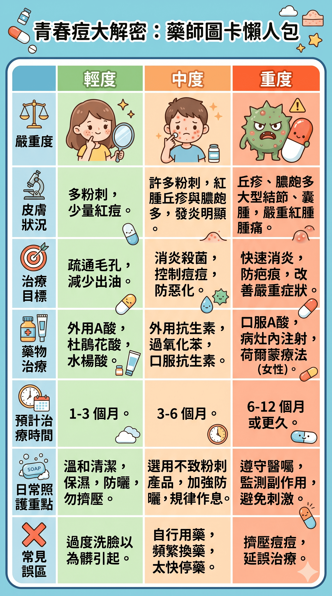

圖卡版本紀錄
青春痘大解密：藥師圖卡懶人包
這張圖卡已於 退出主要目錄，舊網址保留供查找。
與嚴重度及用藥圖卡重複；原圖按嚴重度列出固定治療月數，可能被誤解為個人療程。
請優先閱讀目前版本
展開歷史圖卡（內容未更新）
以下保留退出時的圖片，供版本比對；請優先閱讀上方目前版本。

圖卡版本紀錄
這張圖卡已於 退出主要目錄，舊網址保留供查找。
與嚴重度及用藥圖卡重複；原圖按嚴重度列出固定治療月數，可能被誤解為個人療程。
以下保留退出時的圖片，供版本比對；請優先閱讀上方目前版本。
